Almacenes, Materiales y Repuestos
Un Almacén o Bodega de Inventario de Repuestos, su definición, registro y conceptos básicos. Los Materiales y Repuestos, su definición y registro, distintos tipos de ítems en el almacén, codificación y clasificación. Los procedimientos de administración sobre Materiales y Repuestos. Actualización Manual y Automática de Repuestos. Todo ello conforma el contenido del presente capítulo.
Conceptos Básicos sobre Almacenes, Materiales y Repuestos
Un Almacén
Se trata de una bodega con capacidad de almacenamiento y con funciones de administración para los distintos tipos de ítems que contiene. Hay bodegas de Materias primas, de Materiales y Repuestos, de Producto en Proceso, de Producto Terminado, y las hay también que contienen mezclas de los anteriores. Para claridad, en este capítulo se hace un enfoque hacia las bodegas de Materiales y Repuestos, y hacia aquellas que siendo mixtas, contienen los Repuestos usados por Mantenimiento.
Una bodega mixta de materiales y repuestos puede contener cuatro grandes grupos de ítems, con identidades propias en modelo de inventarios, de codificación, de tipos de movimiento y de administración general. Ellos son: materiales y repuestos universales, materiales y repuestos específicos de Activos / Equipos, Insumos, y Activos.
Por ello, un Almacén fundamenta su operación en tres definiciones:
-
Un esquema de codificación estándar para todos los ítems que contiene o que está en capacidad de contener.
-
Un conjunto de conceptos de Entrada y de Salida que definen claramente cada operación a ser ejecutada, con sus alcances, condicionamientos y requerimientos.
-
Un sistema de costeo, que sirve de base para el cálculo del costo unitario de cada código tras una entrada valorizada. Este costo unitario es normalmente el que se usa para valorizar cada Salida, para consumo o utilización de un ítem del Almacén.
Almacenes y – AM–
AM** Predefine en forma natural un Almacén, en la Tabla de Almacenes (Infraestructura), y además permite la definición de varios adicionales. Para cada Almacén se definen sus conceptos de movimiento de Kárdex en la Tabla Conceptos de Kárdex (Infraestructura). Aunque existen conceptos predefinidos, siempre se pueden definir nuevos conceptos de Entrada, de Salida y de Ajuste, garantizando la consistencia e integridad de la información.
El módulo de Almacén de Repuestos permite administrar de manera independiente cada uno de los almacenes creados en la Tabla de Almacenes (Infraestructura) y dependiendo del usuario que ingrese al AM tendrá sus propios permisos de administración para cada almacén.
Visión General: Funciones Básicas sobre Almacén de Repuestos
Creación de Repuestos: AM** suministra dos procesos básicos para crear y actualizar Repuestos:
-
Creación manual.
-
Importación desde un Sistema de Almacén / Inventario de Repuestos corporativo externo a través de una interfaz automática.
El primer proceso básico de creación de datos de Repuestos consiste en el registro manual, organizado, uno a uno de los códigos de Repuestos del Almacén, junto con su información característica, en la tabla de Almacén de Repuestos de la Base de Datos de AM**.
El primer proceso básico de creación de datos de Repuestos consiste en el registro manual, organizado, uno a uno de los códigos de Repuestos del Almacén, junto con su información característica, en la tabla de Almacén de Repuestos de la Base de Datos de AM**.
El segundo proceso consiste en tomar la información de los Repuestos desde un sistema de Inventarios preexistente y copiarlos en la tabla de Almacén de Repuestos de AM, mediante una interfaz automática que se ejecutará en tiempo real o en un momento definido. El detalle del desarrollo de esta interfaz es acordado entre el Cliente y el Proveedor. En este proceso se requiere que se haga una preparación de los datos preexistente, dándoles un formato que facilite su importación a la Base de Datos de **AM**.
AM** suministra el formato donde se detalla el diseño del archivo de interface. A este formato se deben acomodar los datos de Repuestos a transferir pues es el único que AM** es capaz de interpretar para realizar la creación automática de la tabla de Almacén de Repuestos.
Una vez se encuentre el archivo de interfaz listo, el Cliente lo debe dejar en una tabla intermedia y cuando se ejecute la interfaz automática, AM importa la información de los Repuestos a la base de datos de AM.
Este proceso es útil tanto para crear el archivo de Repuestos, como para actualizarlo. Se recomienda para ello consultar con el asesor en Informática o con Servicio al Cliente del Proveedor.
Actualización de la Información General de un Repuesto: Se distinguen dos tipos de actualizaciones de Repuestos. Uno que registra los cambios en la información general del Repuesto y otro que registra los cambios en la información de Existencias y Costo Unitario del Repuesto, ocasionados en el movimiento de entrada y salida del almacén.
La actualización de la información general de Repuestos se realiza a través de la ventana Detalle en la Ventana Principal de Repuestos, según procedimientos que se exponen más adelante en este capítulo.
Actualización de la Información de Inventarios de un Repuesto: Aunque la actualización de los parámetros de inventarios (stock en existencia y costo unitario del Repuesto, principalmente) se puede realizar en forma manual, en la ventana Detalle en Repuestos, por parte de un usuario con los permisos adecuados, existen otros dos mecanismos para hacerlo.
El primero, mediante la misma interf ase que se utilizó en el proceso automático de creación de la tabla de Almacén de Repuestos. Este caso reviste un escenario particular cuando el Sistema de Inventario de Repuestos externo a AM** es el oficial y el contable, en la Organización. Toda transacción sobre materiales o Repuestos se realiza utilizando las funciones de este sistema externo: administración de códigos de materiales y Repuestos, solicitudes y despachos, entradas y salidas, etc. Esto significa entonces que los módulos de Almacén de Repuestos y de Kárdex de AM** serán utilizados por el área de Mantenimiento solo como referencia del inventario existente y del costo unitario vigente, siendo estos últimos actualizados por saldos periódicos desde el sistema externo.
El uso de dicha interfase es factible pues el proceso de Importación que realiza AM** consiste solo en remplazar los saldos de Repuestos existentes, por los saldos que se importan desde el sistema externo. No se realizan sumas ni restas, solo el reemplazo de saldos para los Repuestos contenidos en el archivo de importación para la interfase. Es claro que la información a ser importada por AM** se genera en el sistema externo, de acuerdo a un formato predefinido y debe contener la información de los saldos, inmediatamente después de un proceso de actualización o de control en dicho sistema externo.
La ejecución de la interfase mencionada anteriormente se puede realizar desde el servidor de Base de Datos de AM** mediante la programación de un Paquete de Transformación de Datos (DTS) para ejecución automática. Para esto es necesario disponer de AM** con SQL Server.
El segundo, mediante el Kárdex que suministra AM **. Es el procedimiento natural suministrado por el aplicativo. Mediante el Kárdex de Almacén se registran en todo detalle, las Entradas, las Salidas y los Ajustes, de Repuestos y artículos de cada Almacén.
Una transacción de entrada al Almacén actualiza los saldos en la tabla de Almacén de Repuestos, incrementando la cantidad en existencia y actualizando el valor unitario, pero también genera un rastro de la transacción, en el archivo de movimiento de Kárdex.
Una transacción de salida del Almacén actualiza los saldos en la tabla de Almacén de Repuestos, decrementando la cantidad en existencia y actualiza el valor unitario, pero también genera un rastro de la transacción en el archivo de movimiento de Kárdex. Cuando se trata de una transacción que involucra una Orden de Trabajo, además de lo anterior, el sistema carga en la Orden de Trabajo referenciada, la cantidad de materiales que salieron del almacén, manteniendo en forma consistente el Inventario de Repuestos, el Movimiento de Kárdex y el consumo de Materiales y Repuestos de las Órdenes de Trabajo.
Una transacción de ajuste, puede ser de 2 tipos: Ajuste por valor o ajuste por cantidad. Un ajuste por valor, aumenta o disminuye el valor unitario actual del repuesto referenciado en el movimiento, lo que genera una inflación del costo total del inventario del repuesto. Un ajuste por cantidad, aumenta o disminuye el Inventario actual del repuesto referenciado en el movimiento, pero no afecta el valor unitario del mismo, sin embargo, si afecta el costo total del inventario. Para que un usuario pueda realizar transacciones de ajuste debe tener los permisos especiales que para ello se definen en el módulo de administración.
Codificación de Repuestos
AM** está diseñado para trabajar un código de Repuestos de hasta 15 posiciones alfanuméricas, en esquema inteligente por niveles o en esquema de codificación bruta.
Si no se tiene una codificación de Repuestos definida o sí se desea modificar la existente, se recomienda utilizar el esquema inteligente por niveles. Es una metodología que requiere de una cuidadosa planeación, en la que se definen los niveles y su longitud, para que no exista el riesgo de que el sistema de codificación colapse en el futuro, y que además toma en cuenta, desde el contenido del almacén hasta el sistema de control de inventarios más adecuado para cada grupo de ítems.
La política de codificación resultante de este ejercicio es tal, que todos los códigos son de la misma longitud y tienen una composición tipo:
**XXYYZZMMNNN**
En la que cada conjunto de letras es una división del conjunto anterior. Esta codificación requiere la realización de un estudio previo.
Ejemplo: Para el nivel XX, o Grupo Principal se pueden definir entre otros:
-
Tornillería, Elementos de Unión
-
Lubricantes y Combustibles
-
Bandas y Correas
-
Tubería, Elementos de Unión y Accesorios
-
Rodamientos y Balineras
-
Repuestos para Motores
-
Repuestos para Generadores de Corriente
-
Repuestos para Bombas y Compresores
-
Repuestos para Aparatos de Transporte Móvil
-
Repuestos para Aparatos de Transporte Fijo
Cada uno de estos grupos se puede dividir en Subgrupos, Tipos y Clases según la cultura técnica de la organización.
En muchos casos es importante definir en el primer nivel (XX) grupos de Repuestos específicos para un Equipo o grupo de Equipos.
Ejemplo
- Repuestos para la Máquina Extractora A28
- Repuestos para las Cizallas CZAJ21
Ventana Principal de Almacén de Repuestos
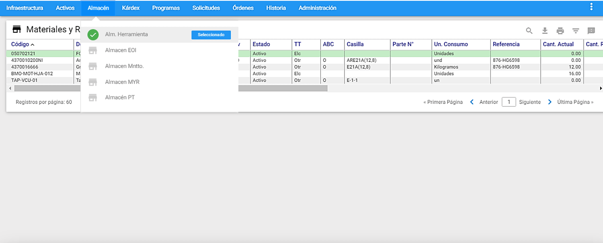
Al sobreponer el puntero del mouse en el módulo de Almacén de Repuestos, se listan los distintos almacenes creados en la tabla de Almacenes de la Infraestructura y cuando se elige un Almacén, el sistema muestra al lado izquierdo un check verde y en frente en azul, el aviso de Seleccionado.

A esta ventana se llega haciendo clic sobre la opción “Almacén” del Menú Principal. A través de ella se ejecutan todas las funciones dedicadas a administrar los Almacenes de Repuestos para Mantenimiento. A continuación se ilustran las porciones que la componen.
Ventana Visor
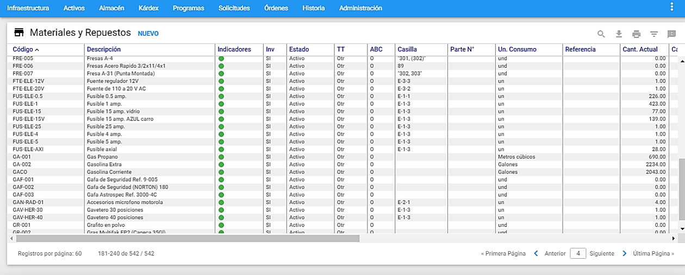
Desde esta ventana es posible observar los Repuestos existentes. Se listan todos o una selección o subgrupo de ellos. Es posible configurar el número de registros que se muestran por página desde el menú Administración en la opción “Valores por Defecto” en la pestaña General.
Al hacer clic sobre alguno de los Repuestos del Visor el sistema responde mostrando la información de ese Repuesto, en forma detallada, en una ventana llamada Ventana Detalle.
Los títulos en azul que encabezan las columnas son también botones que permiten ordenar la tabla, según el título seleccionado. Para elegir un registro de la tabla se da un clic del mouse sobre él o se desplaza el cursor con las teclas de desplazamiento.
Ventana Detalle


En la gráfica anterior, ventana Detalle de Almacén de Repuestos, se aprecian todos sus componentes y su respectivo contenido. En la ventana Detalle de Almacén de Repuestos se encuentra toda la información relevante de inventarios sobre el Repuesto seleccionado en el Visor. A continuación se describen los campos que componen el registro. Sobre cada campo se da una breve explicación.
Repuesto: En este campo se registra el código del Repuesto, de acuerdo a la política de codificación que se haya definido.
Descripción: En este campo se registra la descripción del Repuesto en lenguaje natural.
No Inv/Inv: Define el tipo de Repuesto respecto a su connotación de Inventariado o No Inventariado. Un ítem es inventariado si está codificado en el Almacén y sobre él existen políticas de inventarios y reaprovisionamiento. Es No inventariado si su uso es de solo una vez y de él no se van a realizar más compras. También puede ser No inventariado, en un almacén particular, cuando se trata de un ítem cuya existencia, contablemente ya fue consumida, pero se almacena para ser consumido, por demanda, en un lapso corto.
Descripción larga: Este botón permite realizar una descripción larga del Repuesto. Para ello se abre una nueva ventana en la que se adicionan más de 200 caracteres (Ver Imagen 4). Clase: Es un campo que permite clasificar o agrupar los artículos del Almacén por un criterio particular para la Organización.
Familia: Es un campo que permite definir la familia a la cual pertenece el artículos del Almacén que se está definiendo.
Grupo: Es un campo que permite definir el grupo al cual pertenece el artículos del Almacén que se está definiendo.
Parte Número: Es un campo que permite definir la parte número del artículo del Almacén que se está definiendo.
Casilla: Es el campo en el que se establece la ubicación física del Repuesto dentro del Almacén. Este campo permite cualquier nomenclatura de organización. Ejemplo. E21B (7,12) significaría Estante 21, lado B, posición matricial fila 7 columna 12.
Existencia Inventario: Registra la cantidad en existencia en el Almacén del Repuesto seleccionado. Este campo puede ser actualizado manualmente o en forma automática a través del módulo de Kárdex de Repuestos. Al lado de este campo, el sistema muestra la unidad de medida que se ha definido para él. También, al lado de este campo, el sistema muestra el Valor Total del inventario del Repuesto, que corresponde al producto de la “Existencia Inventario” y el “Costo Unitario Vigente”.
Cantidad Reservada: Informa la cantidad reservada del Repuesto seleccionado. Una reserva es una cantidad de la existencia actual del Repuesto, que se ha comprometido para ser usada, por una persona, en una OT particular y la separa a través de la transacción Reservas. Este campo no es modificable por el usuario. Al lado de este campo, el sistema muestra la unidad de medida que se ha definido para él.
Cantidad Disponible: Es la diferencia entre “Existencia Inventario” menos “Cantidad Reservada”. Es la Cantidad Disponible para consumos de Mantenimiento. Este campo no es modificable por el usuario. Al lado de este campo, el sistema muestra la unidad de medida que se ha definido para él.
Costo Unitario Vigente: Este campo refleja siempre el Costo Unitario del Repuesto seleccionado. Es un valor que puede haber sido actualizado manualmente por alguien que tenía los atributos para hacerlo. Puede también haber sido actualizado automáticamente por el sistema según el sistema de costeo definido para el almacén, a través del Kárdex de Repuestos.
FF Costeo: Es la fecha en la que se hizo el último recalculo del costo unitario para el Repuesto seleccionado. Normalmente es la fecha en la que el Repuesto entró al almacén por última vez por medio de un concepto valorizado.
Costo Última Compra: Este campo registra la última compra del repuesto seleccionado del Almacén. Automatizando los movimientos de la compra.
FF Última Compra: Es la fecha de la última compra del Repuesto seleccionado del Almacén. Se actualiza automáticamente cuando tal movimiento de compra se efectuó a través del Kárdex del Almacén.
FF Último Uso: Es la fecha de la última salida del Repuesto seleccionado del Almacén. Se actualiza automáticamente cuando tal movimiento de salida se efectuó a través del Kárdex de Almacén. En otro caso el sistema no actualiza este campo.
Nivel de Existencia: En este campo se define la cantidad o el nivel en existencia que siempre debe haber de ese Repuesto en el almacén seleccionado.
Nivel Mínimo / Punto de Pedido: Este campo registra una cantidad que tiene una significancia dependiendo del modelo de inventarios que use el Repuesto. En el caso de que se trate de un Repuesto controlado bajo un modelo simple de Inventarios, o de Harris, este campo significa el punto en el nivel de Inventario en el que se debe iniciar una gestión
que exige una cantidad mínima en existencia permanentemente, este campo denota esa cantidad mínima. En ningún caso este parámetro es recalculado por el sistema.
Nivel Máximo: En este campo se define la cantidad o nivel máximo en existencia de ese Repuesto en el almacén seleccionado.
Lote Óptimo a Comprar: En este campo se define el parámetro de inventarios sobre la cantidad adecuada de compra, en cada proceso de reabastecimiento. Este parámetro no es recalculado por el sistema.
Período de Reaprovisionamiento: De acuerdo a estadísticas de consumo sobre el Repuesto seleccionado, normalmente se establece en este campo el parámetro indicativo del período normal de Reaprovisionamiento, acorde con el Lote Óptimo de Compra y con la estadística de consumo. Este parámetro no es recalculado por el sistema. Al lado de este campo, el sistema muestra la palabra “días” para indicar la unidad de medida del período de reaprovisionamiento.
Precio Venta 1, Precio Venta 2, Precio Venta 3: Estos campos son utilizados de tipo información para almacenar los precios actuales, anteriores y promedio del repuesto.
Para ver estos campos es necesario elegir la opción ** “SI”** en la pestaña de Almacén, en “Valores por Defecto” del módulo de Administración en la opción “Manejo de Precios de Venta”.
Ventana Submenú de Repuestos
Ir a RP
El icono Buscar, se abre un campo al lado izquierdo, donde se digita el código exacto del Repuesto que se desea encontrar rápidamente. Luego de digitar el código del Repuesto, se presiona la tecla “Enter” y el cursor se posiciona en consecuencia, sobre el Repuesto deseado en el Visor.
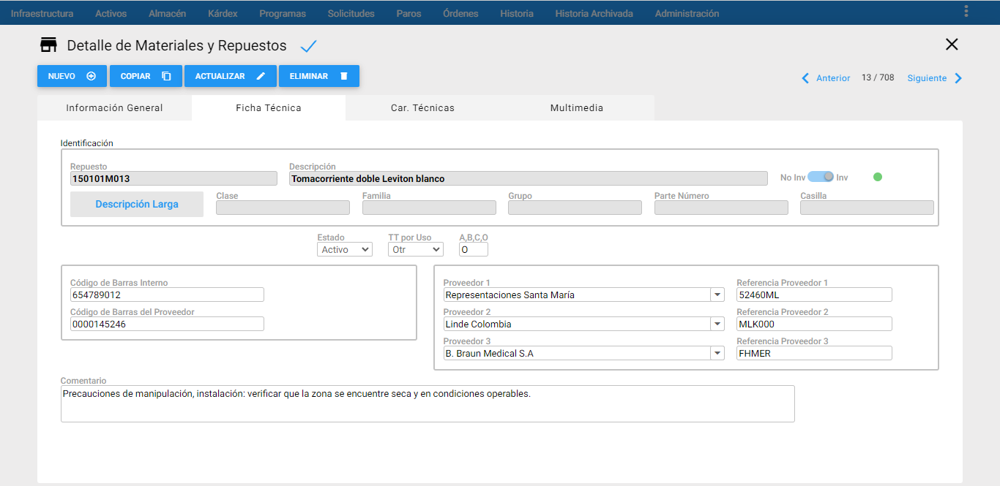
En caso de escribir el código con algún error, el sistema muestra un mensaje de alerta indicando que el Repuesto no existe.

Indicadores
Es posible visualizar de manera inmediata, los Repuestos activos, inactivos y con Multimedia, directamente desde la ventana visor, a través de la columna “Indicadores” que muestra una pelota de color que indica su estado y si tiene asociado Multimedia. El significado del color de cada pelota, se puede ver en el recuadro de Indicadores, ubicado en la parte superior derecha de la ventana visor.
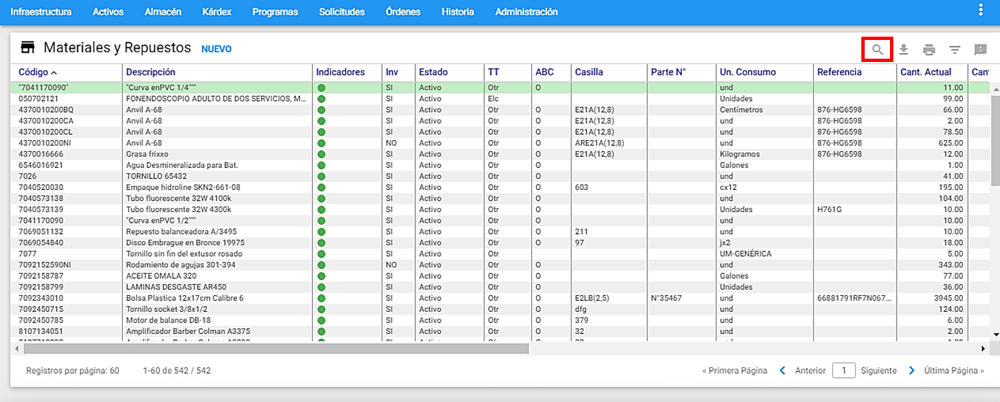
El significado de los colores se visualiza al sobreponer el mouse en el icono que se encuentra al extremo superior derecho y su correspondencia es:
-
Rojo: Repuestos definidos con estado inactivo.
-
Verde: Repuestos definidos con estado activo.
-
Naranja: Repuestos que tienen asociados archivos de imágenes, videos y/o documentos en la pestaña Multimedia.
Subgrupo
Se usa para seleccionar grupos de Repuestos que cumplen un conjunto de filtros o criterios. El objetivo para hacerlo es realizar un estudio posterior sobre los registros seleccionados en el subgrupo. Para ingresar a esta opción se debe dar clic al <span class=”iconify btn” data-icon=filter-variant>icono de filtro</span>, ubicado en la parte superior derecha de la ventana Visor de Almacén de Repuestos.
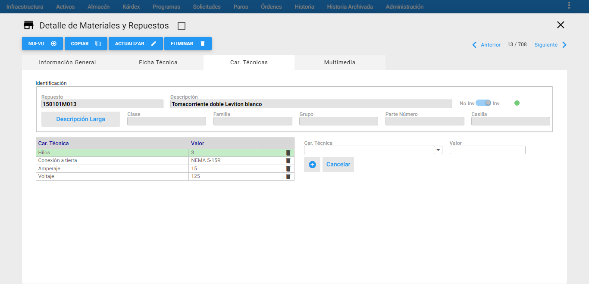
Se usa para seleccionar grupos de Repuestos que cumplen un conjunto de filtros o criterios. El objetivo para hacerlo es realizar un estudio posterior sobre los registros seleccionados en el subgrupo. Para ingresar a esta opción se debe dar clic al <span class=”iconify btn” data-icon=filter-variant>icono de filtro</span>, ubicado en la parte superior derecha de la ventana Visor de Almacén de Repuestos.
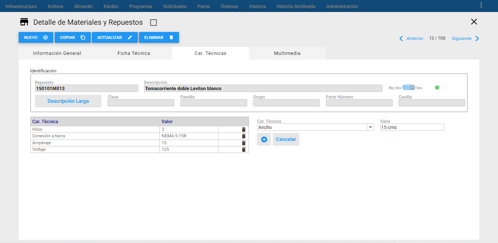
Los campos de datos que constituyen criterio de selección haciendo parte de la Ventana Subgrupo de Repuestos son los siguientes.
A, B, C, O: Permite seleccionar los repuestos que tengan una clasificación A, B, C u O definida.
Casilla: Esta opción permite seleccionar y agrupar aquellos Repuestos que se encuentran en la casilla que se especificó después de marcar el criterio de selección.
Clase: Esta opción permite seleccionar aquellos Repuestos que cumplen con el patrón de clase especificado. También se puede usar los comodines, por Ej. B, B%
Código de Barras Interno: Si existe un código de barras interno dentro de la organización para codificar Repuestos; este campo permite seleccionar el Repue sto que se encuentre asociado al Código de Barras Interno que se ingresó al crear el Repuesto. En este campo se puede usar los comodines, por Ej. %1%, 1%
Código de Barras Proveedor:Permite seleccionar el Repuesto que se encuentre asociado al Código de Barras del Proveedor que se ingresó al crear el Repuesto. En este campo se puede usar los comodines, por Ej. %1%, 1%
Código del Repuesto: Esta selección agrupa los Repuestos relacionados por su código. Por ejemplo: si se escribe BAN%, se seleccionan todos los Repuestos cuyo código inicia por BAN. Si se escribe TR% se seleccionan todos los Repuestos cuyo código inicie por cualquier cuarteto de valores pero que en la quinta y sexta posición tengan un TR. El porcentaje es un carácter comodín que significa “todos”.
Descripción del Repuesto: Selecciona los Repuestos según criterios que se fundamenten en su descripción. Ejemplo: % Banda% selecciona todos los Repuestos en cuya descripción, en cualquier posición, tengan la palabra “Banda”.
Estado: Permite seleccionar el Estado de los Repuestos, es posible registrar el estado de Activo, Vencido, Excedente, Obsoleto o Inservible para el Repuesto activo.
Proveedor 1: Lista los Repuestos por el Proveedor seleccionado. La búsqueda se realiza sobre los 3 campos de Proveedor de un repuesto (Proveedor 1, 2, 3). También se puede elegir el Proveedor 1 mediante el uso de comodines, para ello, se debe dar clic al icono Candado. Si se selecciona la opción ** “Utilizar comodines”, se digita la palabra, por ejemplo FER% y el sistema selecciona todos los Proveedores cuyo nombre empieza por FER. Si se escribe %IA% se seleccionan todos los Proveedores en cuyo nombre, en cualquier posición, tengan la palabra ** “IA”.
Referencia Proveedor 1: A través de esta opción es posible digitar el nombre de la referencia del Repuesto, seleccionar los Repuestos que tienen como referencia proveedor 1 la que se especificó después de marcar el criterio de selección. Este campo permite el uso de
Referencia Proveedor 2: Este criterio permite realizar consultas por la segunda referencia establecida perteneciente al segundo proveedor. Permite el uso de comodines, por Ej. %BR1%, BR1%.
Tipo: Permite seleccionar de la lista el tipo al que pertenece el Repuesto, sí es inventariado o no inventariado.
Tipo de Trabajo: Agrupa los Repuestos de acuerdo al tipo de trabajo al que están asociados.
Nota: Es importante tener en cuenta que cuando se están realizando los subgrupos se pueden utilizar uno o varios de los criterios anteriores simultáneamente. Además es posible hacer unión de selecciones. Esto significa que inmediatamente después de haber realizado una selección es posible hacer otra y unir el resultado de las dos. Para ello, tras definir los criterios de la segunda selección se da un clic al botón Más, en lugar de darlo al botón Aceptar.
Vistas Parciales / Pestañas
Las Vistas Parciales o Pestañas permiten complementar la información que se despliega normalmente sobre un Repuesto, con otro conjunto de información que solo se muestra cuando es necesario, por solicitud del usuario. Las vistas parciales disponibles son: ficha técnica, características técnicas y multimedia.
Ficha Técnica
En la pestaña de Ficha Técnica, se encuentra toda la información relevante del Repuesto seleccionado en el Visor.
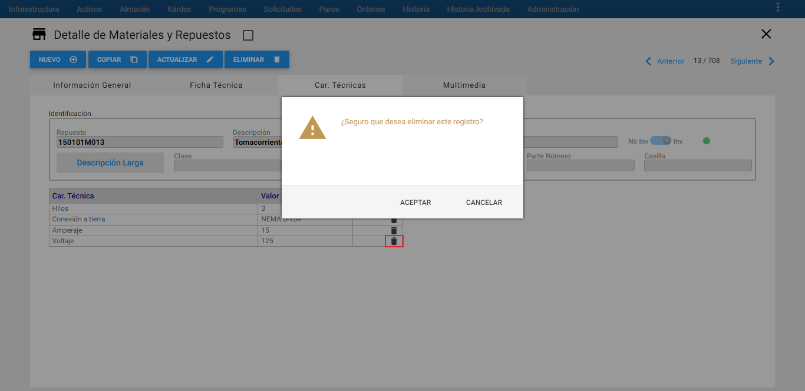
A continuación se describen los campos que componen el registro. Sobre cada campo se da una breve explicación.
Cuadro Identificación: Aparece con los campos bloqueados para que el usuario visualice la información básica del Repuesto al cual se le está definiendo la información de la ficha técnica.
Estado: En este campo de opciones seleccionables es posible registrar el estado del Repuesto: Activo, Vencido, Excedente, Obsoleto o Inservible.
TT por Uso: En este campo se listan los tipos de trabajo para seleccionar el tipo de trabajo que le aplique al Repuesto.
A, B, C, O: Informa si el repuesto se clasifica con el método de Costos basado en actividades (ABC). Este campo Clasificación se utilizara a futuro para el manejo de inventario rotativo. Su definición por defecto es O (significa Otro).
Unidad de Empaque: Es la unidad de compra, de adquisición o de despacho por parte del proveedor. Ej. Caneca de 55 galones, o Caja por 24 unidades.
Unidad de Consumo: Es la unidad mediante la cual se le solicita al Almacén o mediante la cual el Almacén despacha un determinado artículo. Ej. Galones o Unidades.
Código de Barras Interno: Si existe un código de barras interno dentro la organización para la codificación de Repuestos, se debe de ingresar en este campo.
Código de Barras del Proveedor: Se refiere al Código de Barras del Proveedor que se encuentra asociado al Repuesto.
Proveedor 1, Proveedor 2, Proveedor 3: En estos campos se pueden relacionar hasta 3 proveedores del Repuesto seleccionado.
Referencia Proveedor 1, Referencia Proveedor 2, Referencia Proveedor 3: En estos campos se registran las referencias con las que cada Proveedor correspondiente suministra el Repuesto seleccionado.
Comentario: Aquí se ingresan los comentarios sobre un Repuesto o se especifica información adicional al Repuesto.
Características Técnicas
Esta opción permite definir para un determinado Repuesto las características técnicas que lo definen. En la parte izquierda de la ventana aparece un nuevo Visor en el que irán apareciendo las Características Técnicas que se van creando en la ventana Detalle, mientras que en la parte derecha aparece los campos para crear o actualizar la información de las características.
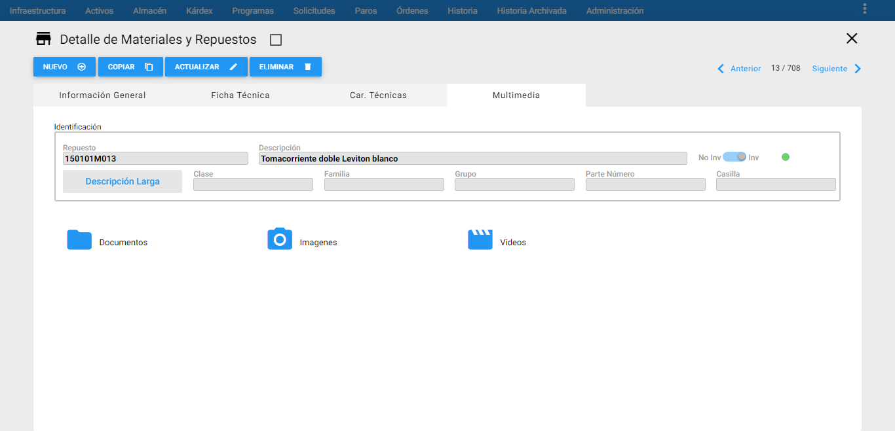
En la gráfica anterior, Vista Parcial de Características, se aprecian las dos columnas de componentes y sus respectivos contenidos. A continuación se describen los campos que componen esta ventana de información adicional.
Cuadro Identificación: Aparece con los campos bloqueados para que el usuario visualice la información básica del Repuesto al cual se le está definiendo la información de las características técnicas.
Car. Técnica: En este campo se lista las características técnicas definidas en la tabla de Infraestructura, para seleccionar aquellas que son propias del Repuesto activo.
Valor: En este campo se define el valor de la característica correspondiente en la primera columna junto con su respectiva unidad de medida.
Multimedia
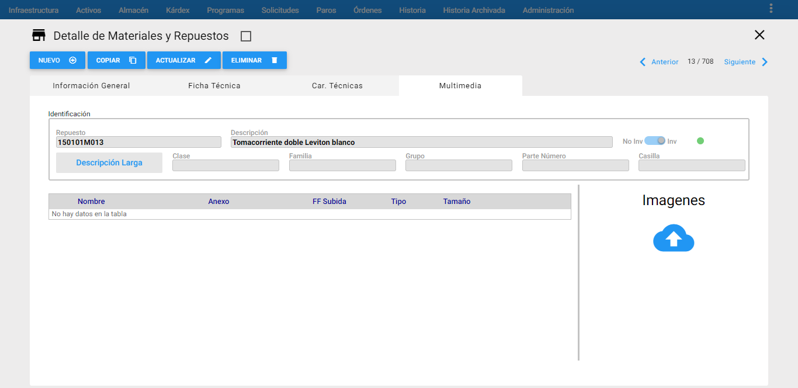
En la gráfica anterior, Ventana Multimedia, se aprecian sus componentes y sus respectivos contenidos.
A través de la ventana Multimedia se adjunta información adicional al RP en cada una de sus carpetas asignadas. Esta opción permite asociar al RP, uno o varios documentos, con el objetivo de facilitar el trabajo a realizar, o guiarlo, o detallarlo minuciosamente. Se aceptan documentos de extensiones .DOC, XLS, PDF, JPG, es decir, de Microsoft Word o Microsoft Excel, Acrobat o Imágenes varias.
Los documentos anexos pueden contener: ayudas necesarias en la ejecución de la OT que se genera desde un EQ: planos, manuales técnicos, manuales de normas técnicas de Mantenimiento o de especificaciones detalladas, normas de seguridad, enfoques de acción, procedimientos sobre cómo realizar la labor, check lists, protocolos de prueba y otra información estándar para su ejecución, en aras de optimizar los recursos de tiempo y de insumos a ser consumidos, como también en aras de preservar la seguridad del recurso humano.
A continuación se describen las carpetas que componen esta ventana; cuando se quiera actualizar o ingresar nueva información al RP, se deberán registrar así:
Cuadro Identificación: Aparece con los campos bloqueados para que el usuario visualice la información básica del Repuesto al cual se le están definiendo las Características.
Documentos: En esta carpeta se relacionan toda clase de documentación relacionada al RP. Ejemplo: Archivos en Word, pdf, Excel, entre otros.
Imágenes: En esta carpeta se relacionan toda clase de imágenes relacionadas al RP. Ejemplo: Imágenes en formato jpg, png, entre otros.
Videos: En esta carpeta se relacionan porciones de videos relacionados al RP. Ejemplo: Videos en formato wmv, entre otros.
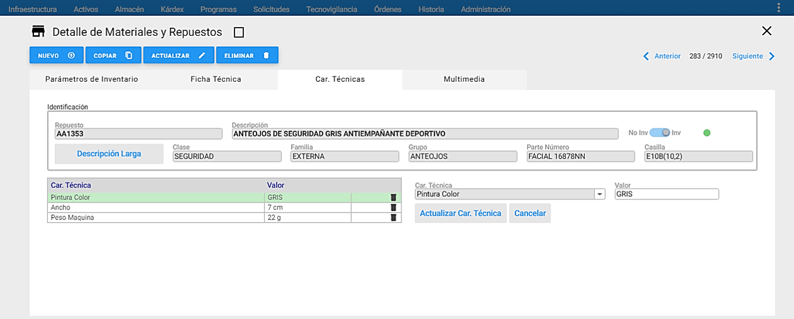
Para adicionar un documento, imagen o video, se debe dar clic en la carpeta deseada, luego se da clic al icono Cargar , a continuación se abre una nueva ventana para realizar la búsqueda del archivo a subir, se selecciona el archivo y se da clic en Abrir.
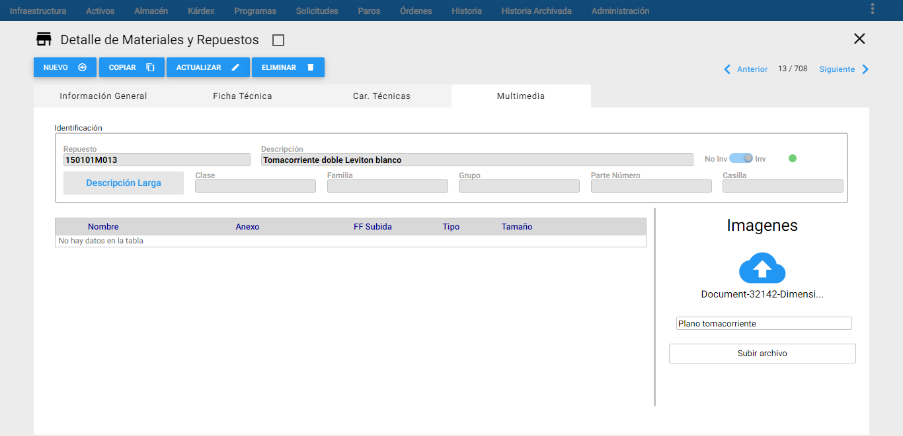
Una vez se da clic enAbrir, se evidencia al lado derecho el nombre del archivo elegido y aparece un campo en blanco, para que el usuario escriba un nombre adicional del archivo para ser usado como una referenciación del archivo adjunto. Luego, se da clic en el botón “Subir archivo”.
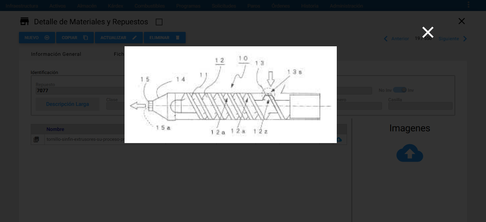
Los archivos que se van adicionando van quedando guardados uno debajo del otro y si se da un clic en uno de las imágenes, se visualiza la imagen adjunta.
Para desasociar un documento, o una imagen o un video, al AC se da clic al icono de eliminar (basura) que se encuentra al lado derecho del archivo al que se le va a realizar la operación. Inmediatamente, sale un mensaje de alerta que pregunta al usuario si está seguro de eliminar este registro y se da clic en el botón Aceptar.
Si se desea descargar un archivo adjunto al RP, se debe dar clic en el icono <span class=”iconify btn” data-icon=cloud-download>la nube con flecha hacia abajo</span> , que se encuentra al lado derecho del archivo que se quiere descargar.
Transacciones
Asociar con Activos
El comando Asociar a Equipos del submenú Repuestos permite asociar un Repuesto con el o los Equipos a los que sirve. Esta asociación es opcional, pero es muy útil en caso de necesitar ubicar con facilidad aquellos Repuestos específicos que solo sirven a Equipos específicos.
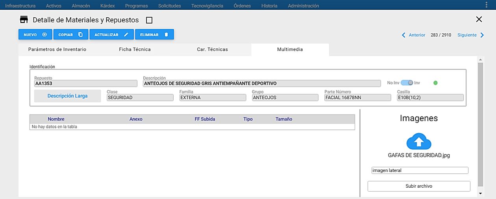
A esta opción se llega al sobreponer el cursor del mouse sobre un almacén y al lado derecho se despliega el conjunto de transacciones disponibles para ese almacén, luego se elige la transacción ** “Asociar con Activos”**. Al lado izquierdo es posible visualizar el conjunto de Activos y al lado derecho se visualiza los Repuestos existentes en el almacén seleccionado previamente. Para navegar entre las páginas se debe dar clic al icono ubicado en la parte inferior derecha de cada recuadro.
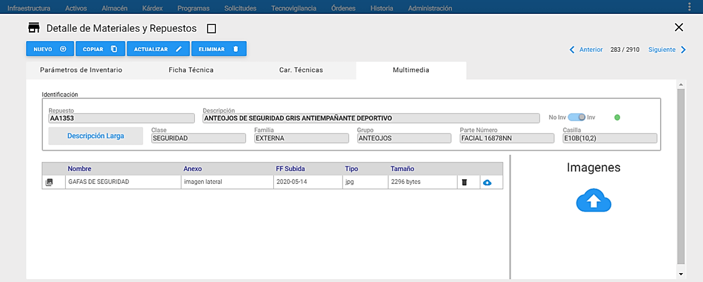
La asociación de los Repuestos con los Activos, inicia al dar clic a los check box, que están al lado izquierdo en la primera columna de la porción de Activos y se puede seleccionar uno o varios, luego se elige uno o varios Repuestos dando clic a los check box que serán asociados a los Activos seleccionados y se asigna la cantidad para cada Repuesto, AM asigna por defecto la cantidad 1, como se muestra a continuación:
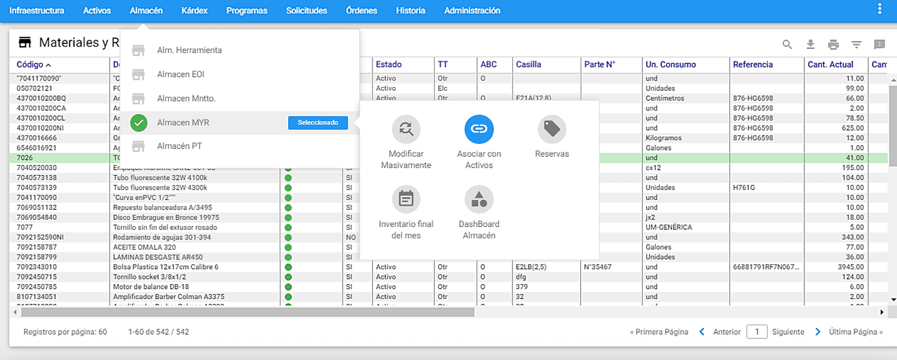
Para terminar la transacción se da clic al botón Asociar inmediatamente se muestra un mensaje confirmando la ejecución de la transacción y se observa el resultado de la asociación realizada.
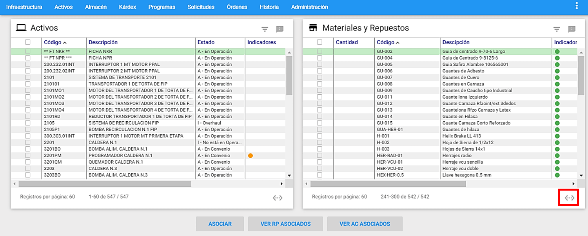
Si el usuario desea ver la asociación de un Activo y sus Repuestos asociados, se debe elegir un único Activo del lado izquierdo y se da clic al botón Ver RP Asociados, AM mostrará en el lado derecho los Repuestos que fueron asociados al Activo seleccionado.
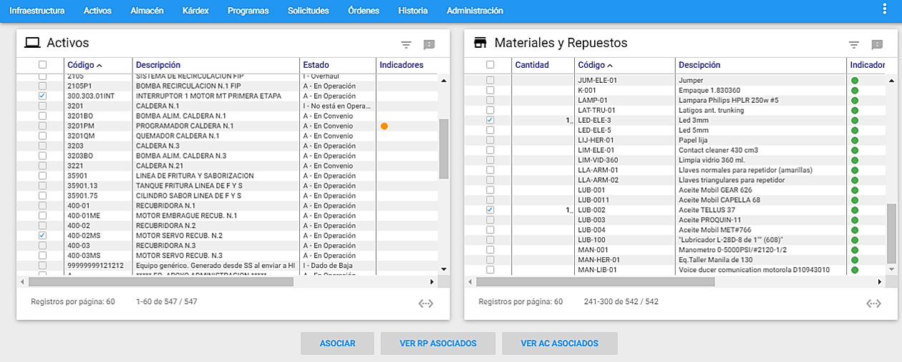
Si se eligen dos o más Activos, el sistema mostrará un mensaje indicando que solo se debe seleccionar un solo Activo.
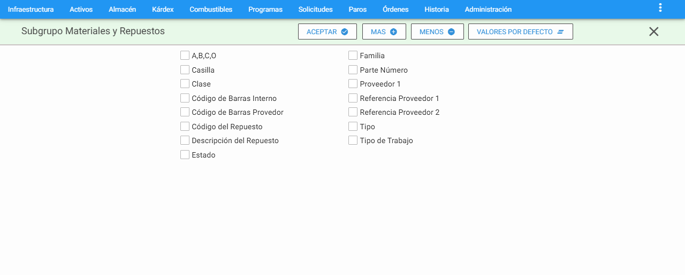
Si el usuario desea ver la asociación de un Repuesto y los Activos asociados, se debe elegir un único Repuesto del lado derecho y se da clic al botón a Ver RP Asociados, AM mostrará en el lado izquierdo los Activos que tienen asociados el Repuesto seleccionado.
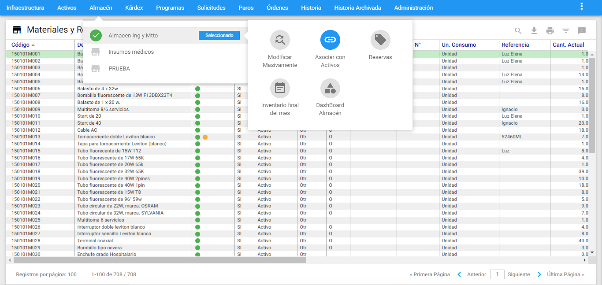
Si se eligen dos o más Repuestos, el sistema mostrará un mensaje indicando que solo se debe seleccionar un solo Repuesto.
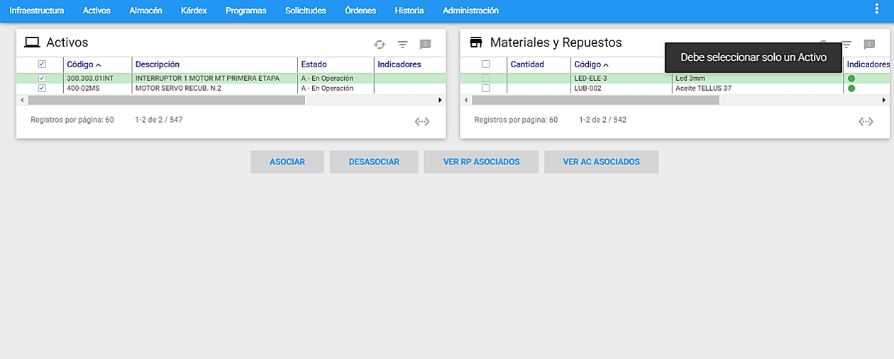
Si el usuario desea desasociar uno o varios Repuestos a uno o varios Activos, se deben elegir a través de los check box.

Para terminar la transacción se da clic al botón a Desasociar inmediatamente se muestra un mensaje confirmando la ejecución de la transacción y se observa el resultado de la desasociación realizada.
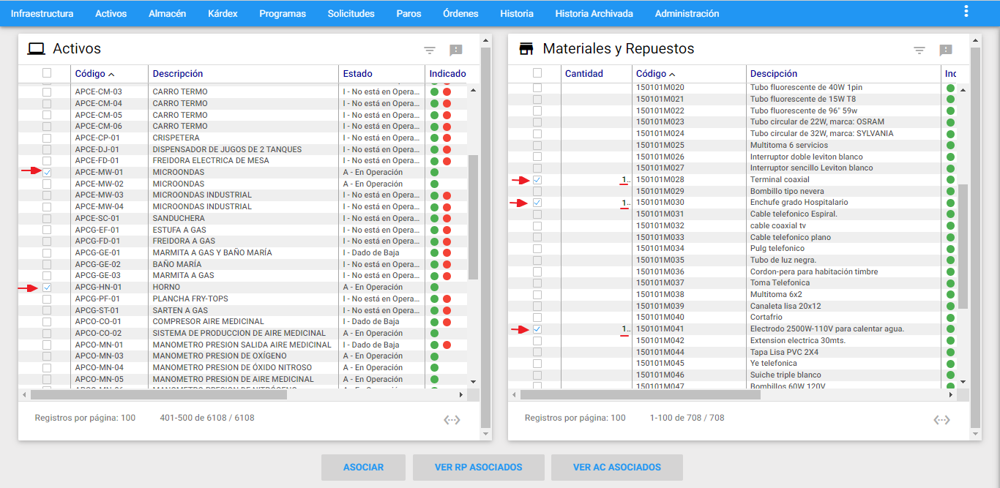
Exportar
Esta opción permite la exportación de los Repuestos que aparecen en el visor, totales o provenientes de un subgrupo, archivo de Excel que se descarga automáticamente en la estación cliente donde se ejecutó el proceso.
Al ejecutar esta transacción, se abrirá una ventana la cual se muestra a continuación:

Al darle clic en el botón Exportar, se generara un archivo de Excel que se descarga automáticamente en la estación cliente donde se ejecutó el proceso, el objetivo de esta exportación es llevar toda la información de los Repuestos contenidos en el visor a un archivo plano, para luego ser analizados.
Adicionalmente, es posible exportar todos los campos de la ventana Detalle de los Repuestos, para esto se da clic en el cuadro llamado ** “Exportar Todos Los Campos”**. También, es posible exportar uno o varios campos de la ventana Detalle de los Repuestos, para esto se da clic en cada uno de los cuadros que acompañan los campos.
Inventario final del mes
Esta transacción se lleva a cabo para realizar el cierre de inventario del mes y consiste en tomar una fotografía del inventario hasta la fecha de realizar el cierre de inventario. A esta opción se llega al sobreponer el cursor del mouse sobre un almacén y al lado derecho se despliega el conjunto de transacciones disponibles para ese almacén, luego se elige la transacción “Inventario final del mes”.

El proceso se realiza eligiendo la opción “Inventario final del mes”, se abre una ventana donde se muestran dos campos desplegables, uno para seleccionar el año y otro para el mes a realizar el cierre de inventario, respectivamente. Los meses que despliega son todos los meses del año. Se debe escoger el año correspondiente con el mes a cerrar. Se da clic en el botón Cerrar inventario y aparecerá una ventana solicitando confirmación de la operación a realizar, como se muestra a continuación.


Una vez finalizado el proceso anterior, se muestra un mensaje de confirmación del Cierre de Inventario.

Para verificar la información del cierre realizado, existe un reporte con el nombre Inventario Final.
El cierre de inventario en el AM, no prohíbe su funcionamiento. Es decir, existen software que hasta no cerrar inventario, hasta que no pase de mes, no permite que se realice ingreso de información solo lo hacen de modo consulta. El **AM** está habilitado para seguir su funcionamiento después de haberse ejecutado la transacción Inventario final del mes.
Para la realización de este proceso, “Inventario final del mes”, se debe tener los permisos adecuados los cuales permiten ejecutar y volver a iniciar el proceso. Estos permisos se configuran por usuario en el módulo de Administración.
Modificar Masivamente
A esta opción se llega al sobreponer el cursor del mouse sobre un almacén y al lado derecho se despliega el conjunto de transacciones disponibles para ese almacén, luego se elige la transacción ** “Modificar Masivamente”.**

Esta transacción permite cambiar o modificar masivamente el Estado, él Almacén, la Unidad de Consumo, Clase, Proveedor, Clasificación A,B,C y O a un subgrupo predeterminado de Repuestos, previamente seleccionados que se encuentran en el Visor. Para ello se debe dar clic al link en azul ** “Modificar Masivamente”** ubicado al lado superior izquierdo de la ventana, seguidamente se muestra las opciones de modificación masiva disponibles.

En la gráfica anterior, Modificar Masivamente, se aprecian sus componentes y sus respectivos contenidos.
A continuación se describen los campos que componen esta Ventana información adicional.
Modificar Solamente Este Repuesto:Al escoger esta opción, se ejecutan los cambios marcados (Estado, Almacén, Unidad de Consumo, Clase, Clasificación A, B,C, O, y Proveedor) al Repuesto que se encuentre seleccionado en el visor.
Modificar Todos los Repuestos en el Visor: Al escoger esta opción, se ejecutan los cambios marcados (Estado, Almacén, Unidad de Consumo, Clase, Clasificación A, B,C, O, y Proveedor) a todos los Repuestos que se encuentren en el visor.
Modificar Estado: Se modifica masivamente el estado Activo e Inactivo, de los Repuestos que están previamente seleccionados en el visor. Los estados predefinidos son: Activo, I-Vencido, I-Otro, I-EOI (Excedente, Obsoleto e Inservible).

Modificar Almacén: Se modifica masivamente el Almacén, de los Repuestos que están previamente registrados en el visor. El sistema lista los almacenes que se encuentran creados en la tabla de Almacenes en Infraestructura. Adicional, se debe dejar el switche en la posición de “Cambiar de Almacén”.

Cuando se requiera Copiar un Repuesto existente en un Almacén a otro Almacén, se debe hacer solamente a través de esta funcionalidad, para ello se debe elegir en primer lugar el Almacén al cual se va a asociar el Repuesto que se va a ingresar y en segundo lugar se debe llevar el switche a la posición de “Copiar y pegar a otro Almacén”.

Modificar Unidad de Consumo: Se Modifica Masivamente la unidad de consumo de un Repuesto. El sistema lista las unidades de medida que se encuentran creadas en la tabla de Unidades de Medida en Infraestructura.

Modificar Clase: Se Modifica Masivamente la clase de un Repuesto. El sistema muestra un campo para que el usuario digite la nueva clase.

Modificar Clasificación A, B, C, O: Se Modifica Masivamente la clasificación A, B, C, O de un Repuesto. El sistema muestra un campo para que el usuario digite la nueva clasificación A,B, C, O. Por defecto, se muestra un campo con la clasificación ** “O”**.

Modificar Proveedor 1: Se Modifica Masivamente el Proveedor 1 de un Repuesto. El sistema lista los Proveedores que se encuentran creadas en la tabla de Terceros como tipo PF en el módulo de Infraestructura.

Modificar Proveedor 2: Se Modifica Masivamente el Proveedor 2 de un Repuesto. El sistema lista los Proveedores que se encuentran creadas en la tabla de Terceros como tipo PF en el módulo de Infraestructura.

Reservas
A esta opción se llega al sobreponer el cursor del mouse sobre un almacén y al lado derecho se despliega el conjunto de transacciones disponibles para ese almacén, luego se elige la transacción ** “Reservas”.**

Es una transacción en Repuestos llamada Reservas, la cual como su nombre lo indica permite registrar y cancelar reservas, del Repuesto seleccionado en el visor, al Almacén de Repuestos, Estas Reservas son realizadas por el departamento de Mantenimiento, también existe la posibilidad de definir el número de la Orden de Trabajo que va a hacer el consumo del Repuesto Reservado.
Ventana Principal de Reservas

Ventana Detalle

A continuación se describen los campos que componen el registro. Sobre cada campo se da una breve explicación.
Código: Aquí es asignado automáticamente por el sistema, el código de la reserva. Este campo no es modificable por el usuario.
Fecha de Creación: Es la fecha en la que se realiza la reserva del Repuesto seleccionado en el visor. No se puede modificar. El programa la toma desde la fecha del sistema.
Fecha de Uso: Es la fecha en la que se tiene planeado utilizar el Repuesto seleccionado en el visor. De acuerdo con esta fecha, la persona encargada del Almacén debe mantener las unidades reservadas, disponibles sólo para quién registró la reserva.
Estado: Informa acerca del curso de la Reserva. Puede ser Activa, Finalizada o Cancelada. El estado Finalizada, solo se puede seleccionar desde el módulo de Kárdex a través de la transacción “Despachar Reservas”. Para mayor detalle consultar la funcionalidad en el módulo de Kárdex / Ventana Visor de Movimientos de Kárdex. Mientras que el estado Cancelada, sí es posible ejecutarlo desde esta opción, para ello se debe seleccionar la reserva que se va a cancelar, luego seleccionar el estado Cancelada, dar clic al botón Actualizar., inmediatamente AM muestra un mensaje de alerta indicándole al usuario si está seguro de modificar esta reserva, para finalizar se da clic en Aceptar.
Reservado por: Es la persona que registra la Reserva de las unidades del Repuesto seleccionado.
Número de OT: En el caso de que las unidades reservadas del Repuesto se vayan a consumir con la ejecución de una OT, aquí se asigna el número de la OT, para que al realizar el Despacho de la Reserva, se registre tal número de OT, en el movimiento de salida. Es posible escribir directamente el número de la OT o elegir una OT desde una ventana de selección de OT, haciendo clic en el <span class=”iconify btn” data-icon=filter-variant>icono de filtro</span>de color azul, al lado derecho del campo.
Cantidad: Es el número de unidades del Repuesto que se desea Reservar.
Comentario: Se pueden agregar aquí, observaciones o comentarios referentes a la reserva.
Adicionar Repuestos

A continuación se describen los campos que componen esta porción de información adicional.
Código RP: En este campo se elige el código del Repuesto, desde una ventana de selección de Repuestos, haciendo clic en el <span class=”iconify btn” data-icon=filter-variant>icono de filtro</span> de color azul, al lado derecho del campo. Una vez se selecciona, aparece automáticamente diligenciados la descripción del Repuesto, la cantidad actual y la disponible.
Descripción RP: En este campo se visualiza la información de la descripción del Repuesto seleccionado. No se puede modificar por parte del usuario.
Cantidad Actual: En este campo se muestra la cantidad en existencia del Repuesto seleccionado. No se puede modificar por parte del usuario.
Cantidad Disponible: En este campo se observa la cantidad disponible del Repuesto seleccionado, es decir, se visualiza la diferencia entre “Existencia Inventario” menos “Cantidad Reservada”. Este campo no es modificable por el usuario.
Cantidad a Reservar: En este campo se define la cantidad que se desea reservar del Repuesto seleccionado. En caso de elegir una cantidad a reservar mayor a la cantidad disponible, el sistema muestra un mensaje de alerta indicando que la cantidad a reservar no está disponible.

Servicios
Reportes

Los anteriores reportes pueden ser seleccionados para uno o varios Repuestos:
Todos los Registros: Con esta opción se imprimen todos los reportes de los Repuestos existentes en la base de datos, sin importar si se ha realizado un subgrupo.
Registros del Visor: Esta opción permite hacer una impresión de todos los Repuestos que están seleccionados en la Ventana Visor, es decir los registros que están seleccionados en el subgrupo actual.
Registro Seleccionado: Esta opción permite hacer una impresión del Repuesto que esta seleccionado en la Ventana Visor (el cursor verde se encuentra sobre él).
Subtítulo: En este campo es posible registrar un poco menos de una línea de información, tipo documentación del Reporte, para que se imprima bajo el área de títulos estándar.
Para visualizar los reportes, se selecciona el reporte y luego se da clic al botón Imprimir..